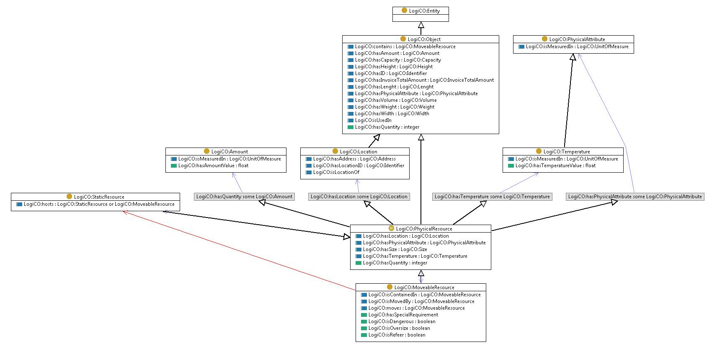

http://ontology.tno.nl/logico#MoveableResource
Class LogiCO:MoveableResource

rdf:type
owl:Class
rdfs:comment
A Moveable Resource is a physical resource characterized by the capability of moving on its own or being contained for the purpose of transportation
rdfs:subClassOf
LogiCO:PhysicalResource
owl:disjointWith
LogiCO:StaticResource
References
as owl:equivalentClass (
LogiCO:PhysicalResource
)
as rdfs:domain (
LogiCO:isRefeer
,
LogiCO:isDangerous
,
LogiCO:hasSpecialRequirement
,
LogiCO:moves
,
LogiCO:isContainedIn
,
LogiCO:isOversize
,
LogiCO:isMovedBy
)
as rdfs:range (
LogiCO:contains
,
LogiCO:hosts
,
LogiCO:isMovedBy
,
LogiCO:moves
,
LogiCO:isContainedIn
)
as rdfs:subClassOf (
LogiCO:Package
,
LogiCO:ProductClass
,
LogiCO:TransportMeans
,
LogiCO:MoveableEquipment
)
Generated with
TopBraid Composer
by
TopQuadrant, Inc.